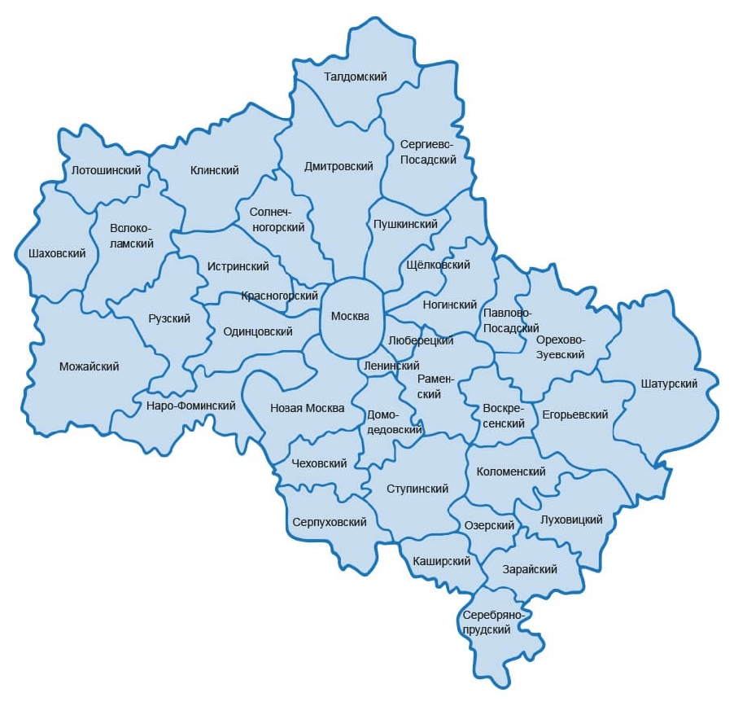

3. Задача о покрытии множества.
Условие:
Вы открываете собственную авторскую программу на радио и хотите, чтобы вас слушали во всех районах московской области.
Нужно решить, на каких радиостанциях должна транслироваться ваша передача. Каждая станция стоит денег, поэтому количество станций необходимо свести к минимуму.
Карта московской области с районами:

Имеется хеш-таблица станций с покрытием районов:
stations = {
"Moscow station": {"Москва", "Ленинский", "Люберецкий", "Ногинский", "Щёлковский", "Пушкинский", "Дмитровский", "Солнечногорский", "Красногорский", "Одинцовский", "Новая Москва"},
"Chehov station": {"Чеховский", "Новая Москва", "Домодедовский", "Ступинский", "Серпуховский"},
"Ramenskoe": {"Раменский", "Ленинский", "Люберецкий", "Ногинский", "Павлово-Посадский", "Орехово-Зуевский", "Воскресенский", "Коломенский", "Ступинский", "Домодедовский", "Ленинский"},
"Silver pond": {"Серебряно-прудский", "Каширский", "Озерский", "Луховицкий", "Зарайский"},
"Kolomna station": {"Коломенский", "Раменский", "Воскресенский", "Егорьевский", "Луховицкий", "Озерский", "Ступинский"},
"Egorievsk station": {"Егорьевский", "Луховицкий", "Коломенский", "Воскресенский", "Орехово-Зуевский", "Шатурский"},
"Orehovo station": {"Орехово-Зуевский", "Шатурский", "Егорьевский", "Воскресенский", "Раменский", "Павлово-Посадский", "Ногинский"},
"Noginsk": {"Ногинский", "Павлово-Посадский", "Раменский", "Люберецкий", "Москва", "Щёлковский", "Пушкинский"},
"Dmitrov station": {"Дмитровский", "Талдомский", "Сергиево-Посадский", "Пушкинский", "Москва", "Солнечногорский", "Клинский"},
"Sun station": {"Солнечногорский", "Клинский", "Дмитровский", "Москва", "Красногорский", "Истринский"},
"Istra": {"Истринский", "Клинский", "Солнечногорский", "Красногорский", "Одинцовский", "Рузский", "Волоколамский"},
"Ruza": {"Рузский", "Волоколамский", "Истринский", "Одинцовский", "Наро-Фоминский", "Можайский"},
"Volokolamsk station": {"Волоколамский", "Клинский", "Истринский", "Рузский", "Можайский", "Шаховский", "Лотошинский"},
"Mozaisk": {"Можайский", "Шаховский", "Волоколамский", "Рузский", "Наро-Фоминский"}
}
Каждая станция покрывает определённый набор районов, эти наборы перекрываются.
Нужно найти минимальный набор станций, который бы покрывал все районы. Для этого необходимо:
1. Составить список всех возможных подмножеств станций - так называемое степенное множество. В нём содержится 2^n возможных подмножеств.
2. Из этого списка выбирается множество с наименьшим набором станций, покрывающих все районы.
Проблема в том, что вычисление всех возможных подмножеств станций займёт слишком много времени. Для n станций оно потребует времени О(2^n).
На помощь приходят жадные алгоритмы.
Нужно:
1. Выбрать станцию, покрывающую наибольшее количество районов, ещё не входящих в покрытие. Если станция будет покрывать некоторые районы, уже входящие в покрытие, это нормально.
2. Повторять, пока остаются районы, не входящие в покрытие.
Такой алгоритм будет приближённым и выполнится за время О(n^2), где n - количество радиостанций.
Код:
#####################
"""ВХОДНЫЕ ДАННЫЕ."""
#####################
stations = {
"Moscow station": {"Москва", "Ленинский", "Люберецкий", "Ногинский", "Щёлковский", "Пушкинский", "Дмитровский", "Солнечногорский", "Красногорский", "Одинцовский", "Новая Москва"},
"Chehov station": {"Чеховский", "Новая Москва", "Домодедовский", "Ступинский", "Серпуховский"},
"Ramenskoe": {"Раменский", "Ленинский", "Люберецкий", "Ногинский", "Павлово-Посадский", "Орехово-Зуевский", "Воскресенский", "Коломенский", "Ступинский", "Домодедовский", "Ленинский"},
"Silver pond": {"Серебряно-прудский", "Каширский", "Озерский", "Луховицкий", "Зарайский"},
"Kolomna station": {"Коломенский", "Раменский", "Воскресенский", "Егорьевский", "Луховицкий", "Озерский", "Ступинский"},
"Egorievsk station": {"Егорьевский", "Луховицкий", "Коломенский", "Воскресенский", "Орехово-Зуевский", "Шатурский"},
"Orehovo station": {"Орехово-Зуевский", "Шатурский", "Егорьевский", "Воскресенский", "Раменский", "Павлово-Посадский", "Ногинский"},
"Noginsk": {"Ногинский", "Павлово-Посадский", "Раменский", "Люберецкий", "Москва", "Щёлковский", "Пушкинский"},
"Dmitrov station": {"Дмитровский", "Талдомский", "Сергиево-Посадский", "Пушкинский", "Москва", "Солнечногорский", "Клинский"},
"Sun station": {"Солнечногорский", "Клинский", "Дмитровский", "Москва", "Красногорский", "Истринский"},
"Istra": {"Истринский", "Клинский", "Солнечногорский", "Красногорский", "Одинцовский", "Рузский", "Волоколамский"},
"Ruza": {"Рузский", "Волоколамский", "Истринский", "Одинцовский", "Наро-Фоминский", "Можайский"},
"Volokolamsk station": {"Волоколамский", "Клинский", "Истринский", "Рузский", "Можайский", "Шаховский", "Лотошинский"},
"Mozaisk": {"Можайский", "Шаховский", "Волоколамский", "Рузский", "Наро-Фоминский"}
}
# составим множество районов, которым требуется радиовещание
districts = set()
for a in stations.values():
for b in a:
districts.add(b)
# итоговый набор станций
result = set()
"""ОСНОВНОЙ ЦИКЛ."""
while districts: # пока множество районов требует покрытия цикл продолжается
# определение лучшей станции
best_station = None
districts_covered = set()
for station, district_for_station in stations.items():
covered = districts & district_for_station # пересечение двух множеств. Так ищем покрытие станции, которая итеративно идёт в цикле.
if len(covered) > len(districts_covered): # проверяется условие для определения лучшей станции
best_station = station
districts_covered = covered
result.add(best_station)
# обновим множество районов, которым требуется радиовещание
districts -= districts_covered
"""ВЫВОД СТАНЦИЙ В stdout."""
print()
for i in sorted(list(result)):
print(i)
print()